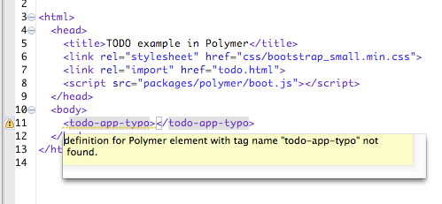

用 Dart 和 web 组件创建结构化的、可封装的、客户
端 web 应用。
一个 Dart 版本的
Polymer。
Polymer.dart 移植了 Polymer Foundation 和 Polymer Core。
在查看下面代码的同时，记得看看 Dart 教程 定义一个自定义元素。 该教程告诉你如何定义、实现和初始化 一个自定义元素。
使用自定义元素扩展 HTML 标签。
该示例显示了一个简单的自定义元素。高级的自定义元素 可以包含样式、自定义行为、属性、数据绑定以及更多 功能。
下面的 HTML 代码定义了一个自定义元素：
<!-- hello_world.html -->
<polymer-element name="hello-world" noscript>
<template>
<p>Hello from inside a custom element!<p>
</template>
</polymer-element>
下面的 HTML 代码_使用_ 了自定义元素：
<head> <link rel="import" href="hello_world.html"> <script type="application/dart">export 'package:polymer/init.dart';</script> <script src="packages/browser/dart.js"></script> </head> <body><hello-world></hello-world></body>
使用实时的双向数据绑定来同步 DOM 节点和对象模型的数据。
该示例中，ClickCounterElement 的 count 变量绑定
到自定义元素 <template> 的 {{count}} 中。
当 count 的值改变的时候， 元素的文本也跟着
改变。
<polymer-element name="click-counter">
<template>
<button on-click="{{increment}}">Click Me</button>
<p>You clicked the button {{count}} times.</p>
</template>
<script type="application/dart" src="click_counter.dart"></script>
</polymer-element>
import 'package:polymer/polymer.dart';
import 'dart:html';
@CustomTag('click-counter')
class ClickCounterElement extends PolymerElement {
@observable int count = 0;
ClickCounterElement.created() : super.created();
void increment(Event e, var detail, Node target) {
count += 1;
}
}
用属性来配置自定义元素。
该示例中，VolumeNobElement 的 volume 变量绑定
到自定义元素 <template> 的 {{volume}} 中。
当 volume 的值改变的时候， 元素的文本也跟着
改变。
<polymer-element name="volume-nob">
<template>
<p>You turned the volume to {{volume}}.</p>
</template>
<script type="application/dart" src="volume_nob.dart"></script>
</polymer-element>
import 'package:polymer/polymer.dart';
import 'dart:html';
@CustomTag('volume-nob')
class VolumeNobElement extends PolymerElement {
// @published means 'this is an attribute', and it is observable.
@published int volume = 0;
VolumeNobElement.created() : super.created();
}
可以通过如下自定义属性来初始化 volume 的值：
<volume-nob volume="11"></volume-nob>
通过在模板中声明式条件来控制 UI。
条件模板是数据绑定的一部分。
如果 count 值变了，模板自动重新计算。
<polymer-element name="click-counter">
<template>
<button on-click="{{increment}}">Click Me</button>
<template if="{{count <= 0}}">
<p>Click the button. It's fun!</p>
</template>
<template if="{{count > 0}}">
<p>You clicked the button {{count}} times.</p>
</template>
</template>
<script type="application/dart" src="click_counter.dart"></script>
</polymer-element>
import 'package:polymer/polymer.dart';
import 'dart:html';
@CustomTag('click-counter')
class ClickCounterElement extends PolymerElement {
@observable int count = 0;
ClickCounterElement.created() : super.created();
void increment(Event e, var detail, Node target) {
count += 1;
}
}
遍历一个集合，为每个集合的元素应用 一个模板。
模板循环是数据绑定的一部分。
如果从 fruits 中删除或者添加元素，
<ul> 的内容会自动更新。
<polymer-element name="fav-fruits">
<template>
<ul>
<template repeat="{{fruit in fruits}}">
<li>
I like {{ fruit }}.
</li>
</template>
</ul>
</template>
<script type="application/dart" src="fav_fruits.dart"></script>
</polymer-element>
import 'package:polymer/polymer.dart';
@CustomTag('fav-fruits')
class FavFruitsElement extends PolymerElement {
final List fruits = toObservable(['apples', 'pears', 'bananas']);
FavFruitsElement.created() : super.created();
}
继承真正的 DOM 元素。
<polymer-element name="fancy-button" extends="button">
<template>
<style>
.fancy {
color: pink;
}
</style>
<span class="fancy"><content></content></span>
</template>
<script type="application/dart" src="fancy_button.dart"></script>
</polymer-element>
import 'package:polymer/polymer.dart';
import 'dart:html';
@CustomTag('fancy-button')
class FancyButton extends ButtonElement with Polymer, Observable {
FancyButton.created() : super.created() {
polymerCreated();
}
}
<button is="fancy-button"></button>
通过 pub 来分享和重用自定义元素， pub 为 Dart package manager(包管理器)。
> pub get fancy_button
<head> <linkrel="import"href="packages/fancy_button/fancy_button.html"> </head> <body> <buttonis="fancy-button">Click me!</button> </body>
在 polymer.dart 示例代码中 可以看到很多很多示例代码。 学习如何 绑定到 checkbox、 嵌套模板、 在自定义元素调用函数、 以及更多内容。 如果你需要一个新的示例，请 告诉我们 。
用 pub 来
安装 polymer.dart。
在 pubspec.yaml 中添加如下代码即可：
dependencies:
polymer: any
然后，运行 pub get 来下载该库并在代码中使用。
查看 polymer.dart pub 页面 了解更多内容。
Polymer.dart 提供一个工具 linter 来报告语法和用法警告。 linter 可以和 Dart 编辑器关联起来并直接 的 代码中显示警告。
在项目根目录中创建一个 build.dart 文件：
import 'package:polymer/builder.dart';
void main(List<String> args) {
lint(entryPoints: ['web/index.html'], options: parseOptions(args));
}
当保存文件的时候，Dart 编辑器运行 build.dart 并显示来自于
linter 的警告信息。

用 pub build 把 polymer.dart 编译为 JavaScript，这样你的应用
就可以在大多数的浏览器中运行了。Build 的时候也会把脚本代码连接到同一个文件中
来加速网页加载速度。
首先，把 polymer.dart 的 transformer 添加到你的 pubspec.yaml 文件中，
transformers 部分应该位于该文件的末尾处，在 依赖项后面。
transformers:
- polymer:
entry_points: web/index.html
然后，在项目根目录运行 pub build 会生成一个 build 目录。
> pub build
在 build 目录中包含 HTML、 JavaScript、和其他资源。
然后你可以在你喜欢的服务器中部署 build 目录中的文件。
关于 build 的详细信息，请参考： pub build.
Polymer.dart 是 Web UI 的下一次革命。
从 Web UI 升级到 polymer.dart 提供了一些提示来帮助你升级。
Polymer.dart 在 IE9、 IE10、 Safari 6、最新的 Chrome、 最新的 Firefox、 和最新的 Android 版 Chrome 上测试通过。
Dart 团队和 Polymer 团队相互协作一起保证 polymer.dart 元素和 polyfills (目前还没包含在浏览器中的特性) 能够完全兼容 Polymer。
我们非常期待你的建议和反馈。
Polymer.dart 是开源的。你可以在 dart.googlecode.com/ 中 查看 polymer.dart 代码和很多组件代码。 下载代码 来深入研究并贡献补丁。
Polymer.dart 和 Polymer 一样还在开发中。
Web UI 是 polymer.dart 的先驱。 我们认为 Polymer.dart 和 Web UI 在功能上是同等的。
我们的目标是让所有的 Polymer 功能都可以在 Dart 中使用。
| Feature | Parity with Polymer |
|---|---|
| Custom Elements | Tracking |
| Shadow DOM | Tracking |
| Observers | Tracking |
| Node.bind() | Tracking |
| Template Binding | Tracking |
| HTML imports | Tracking |
| Polymer Expressions | Tracking |
| Polymer Core | Tracking |
| Pointer events | Not started |
| Web animations | Not started |
| Polymer base elements | Community effort |
| Polymer UI elements | Community effort |
来自 Dart 教程 的 定义一个自定义元素， 介绍了如何使用 Polymer.dart 开发自定义 元素的介绍。 你也可以查看教程中的其他 Polymer 示例 。
下面是 polymer.dart 库的一些延伸性资料。阅读这些资料有利于你掌握 polymer.dart。
Much of polymer.dart is built upon new and emerging web specifications. Polymer.dart offers polyfills for the following features.
Heads up: These are specs written for implementors. Lots of details ahead.